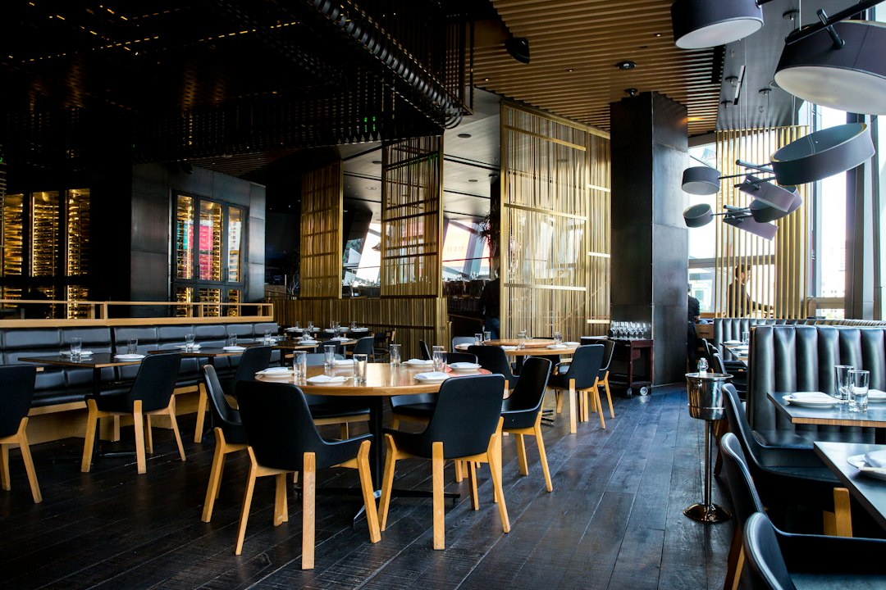

Ristorazione 2026: Trasforma i Menu Digitali con Smart Experience / Taste Engine per un Servizio Innovativo

Ristoratori e Titolari Ho.Re.Ca.: l’evoluzione imprescindibile del menu digitale nel prossimo biennio
- Il settore Ho.Re.Ca. affronta la sfida della digitalizzazione dei menu in un contesto di forte evoluzione tecnologica.
- I tradizionali menu PDF e la pressione sul personale compromettono l’esperienza cliente e la gestione delle informazioni allergeni.
- Smart Experience / Taste Engine di RM Studio integra AI e storytelling per rivoluzionare l’interazione digitalizzata senza abbonamenti ricorrenti.
Analisi approfondita della notizia e delle implicazioni operative
Negli ultimi mesi il settore della ristorazione ha accelerato il proprio percorso verso la digitalizzazione, spinto dalla crescente domanda di esperienze clienti caratterizzate da interazione, personalizzazione e rapidità. Tuttavia, la diffusione di format digitali tradizionali, come i menu PDF statici, non permette una comunicazione efficace né un coinvolgimento profondo. In particolare, l’assenza di strumenti dinamici e interattivi ostacola la trasparenza sulle caratteristiche dei piatti, comprese informazioni essenziali come allergeni e abbinamenti enogastronomici. Il risultato è un collo di bottiglia operativo per i ristoratori e il personale di sala, con impatti negativi sull’efficienza del servizio e sulla soddisfazione del cliente finale.
La prospettiva tecnologica nei prossimi 24 mesi prevede l’adozione crescente di soluzioni di intelligenza artificiale, chatbot conversazionali e storytelling multimediale nel campo Ho.Re.Ca. Queste tecnologie diventano leve strategiche per personalizzare l’esperienza del consumatore, ottimizzare il lavoro del personale e garantire una comunicazione trasparente e immersiva.
Le conseguenze e i costi di non agire
Continuare a utilizzare menu PDF statici provoca diversi effetti dannosi per le attività Ho.Re.Ca. Innanzitutto, la scarsa qualità grafica e il ridimensionamento non ottimale rendono i menu poco leggibili, compromettendo la percezione di professionalità e cura. Questo porta a un aumento delle domande al personale, il quale si trova spesso sovraccaricato e incapace di offrire un’assistenza esaustiva, soprattutto sui temi degli allergeni o degli abbinamenti consigliati. Nel contesto attuale, ciò può tradursi in un’esperienza cliente poco fluida e nella perdita di fiducia.
Inoltre, i costi nascosti derivanti da errori comunicativi o mancate indicazioni su allergeni possono avere importanti ripercussioni legali e di reputazione. La mancanza di un sistema digitale aggiornato e interattivo limita la capacità di modificare in real-time menu e offerte, obbligando a costose ristampe cartacee o aggiustamenti manuali, con impatti economici e ambientali critici.
Come Smart Experience / Taste Engine risolve il problema
Smart Experience / Taste Engine di RM Studio si propone come soluzione innovativa e integrata, concepita per rispondere concretamente alle esigenze di ristoratori, chef e titolari di locali del settore Ho.Re.Ca. Questo e-menu interattivo si avvale di un Maître Virtuale AI che opera tramite un’interfaccia simile a WhatsApp. Il cliente può interagire in modo semplice e immediato per ottenere informazioni dettagliate sui piatti, sugli allergeni e sulle proposte personalizzate, senza gravare sul personale di sala.
In aggiunta, la funzione di abbinamento vini Sommelier integrata consente di suggerire il vino più adatto a ogni portata, aumentando il valore percepito e favorendo l’incremento delle vendite complementari. Il storytelling dedicato ai piatti e i video che mostrano l’atmosfera del locale arricchiscono l’esperienza emozionale e coinvolgono maggiormente il cliente, facilitando scelte consapevoli e incrementando la fidelizzazione.
Dal punto di vista economico, il modello one-time payment a €390,00 senza abbonamenti offre un vantaggio competitivo cruciale, allontanando i clienti dalla trappola dei costi ricorrenti senza rinunciare a funzionalità di alta gamma.
| Gestione Tradizionale | Con Smart Experience / Taste Engine |
|---|---|
| Menu PDF statico, ridimensionamento sgranato e non leggibile su dispositivi mobili | E-menu interattivo, scalabile e ottimizzato per ogni device con alta definizione |
| Camerieri impegnati a rispondere a domande su piatti, ingredienti e allergeni | Maître Virtuale AI che risponde istantaneamente e scarica il lavoro dallo staff |
| Nessuna assistenza su abbinamento vini o presentazione immersiva | Consulente Sommelier digitale e contenuti multimediali per storytelling e video |
| Costi ricorrenti per aggiornamenti o ristampe | Sblocco una tantum a €390,00, senza abbonamenti, con aggiornamenti semplici e rapidi |
💡 Ti è stato utile questo approfondimento?
Condividilo con un collega o un amico del settore Ristoratori, Chef, Titolari di Locali e Attività Ho.Re.Ca. a cui potrebbe interessare!
FAQ
D: In che modo Smart Experience / Taste Engine semplifica la gestione dei menu aggiornati?
R: Il sistema consente di modificare il menu in tempo reale senza necessità di ristampa, offrendo una piattaforma cloud user-friendly e integrata.
D: È necessario un abbonamento mensile per utilizzare il prodotto?
R: No, l’accesso prevede un pagamento una tantum di €390,00, senza costi ricorrenti e con aggiornamenti semplici.
D: Come funziona il Maître Virtuale AI per l’utente finale?
R: Si interagisce tramite una chat simile a WhatsApp che risponde alle domande sui piatti, allergeni, vini e curiosità, migliorando l’esperienza di ordinazione.
Inizia Subito
Sblocco una tantum a €390.00 senza abbonamenti con Jingle promozionale incluso.
Fonti Ufficiali e Risorse Esterne
Scopri l'Intelligenza Artificiale per la tua attività
Ottimizza i processi e aumenta le vendite con le soluzioni B2B di RM Studio.
Scopri Smart Experience / Taste Engine